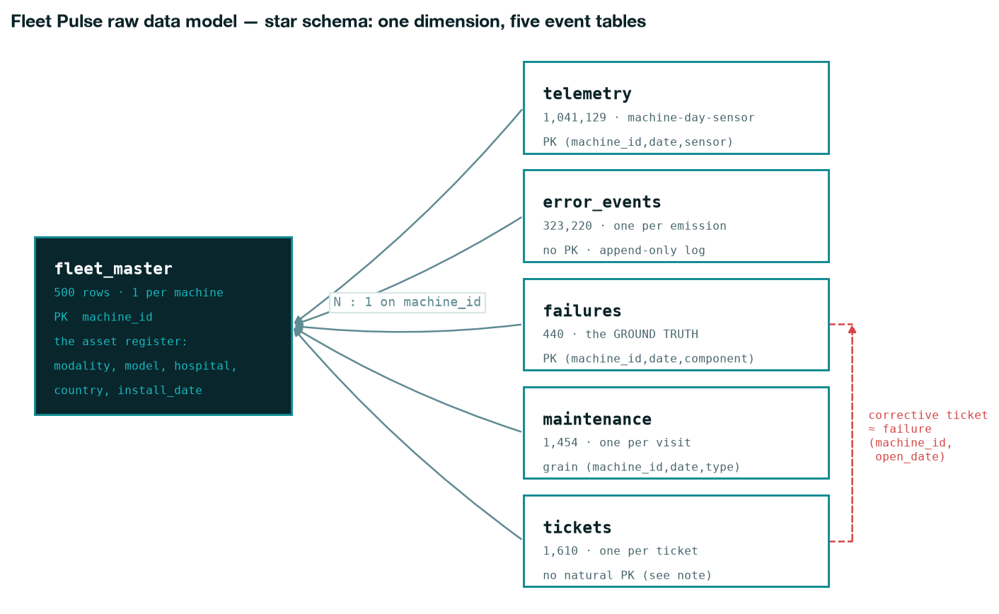
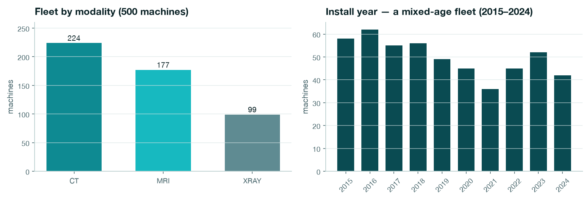
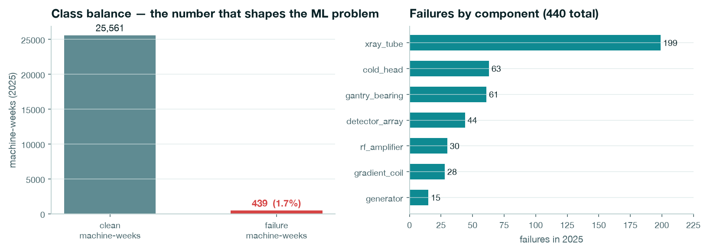
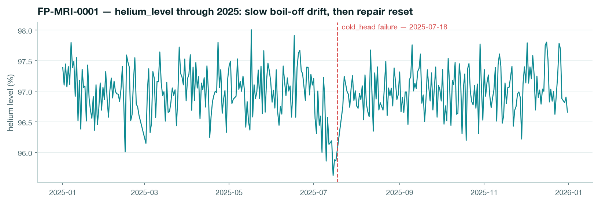

EDA · Data model · v1
Objective: map every raw table — its grain, primary key, and how it joins the rest — so anyone picking up the project knows exactly what the model is built on before a single feature is engineered.
Everything the service team will ever see — the weekly worklist, the risk drivers, the ticket
history — is a controlled join of six raw tables. One dimension table describes the machines; five event tables
record what happens to them. Every join runs through a single key: machine_id.
machine_idThe layout mirrors how real service data lands: an asset register (who/where the machines are) plus append-only event streams (what the machines did). Facts never repeat machine attributes — they carry the key and join out.

fleet_master is the dimension (PK machine_id);
telemetry, error events, failures, maintenance and tickets are event tables that each carry
machine_id as a foreign key. The dashed link on the right is a soft join: a corrective
ticket corresponds to a failure via (machine_id, open_date) — there is no shared surrogate ID,
exactly as in real service systems.| From table | Key | To table | Cardinality | Meaning |
|---|---|---|---|---|
| telemetry | machine_id | fleet_master | N : 1 | each sensor reading belongs to one machine |
| error_events | machine_id | fleet_master | N : 1 | each error emission belongs to one machine |
| failures | machine_id | fleet_master | N : 1 | each failure belongs to one machine |
| maintenance | machine_id | fleet_master | N : 1 | each visit belongs to one machine |
| tickets | machine_id | fleet_master | N : 1 | each ticket belongs to one machine |
| tickets (corrective) | machine_id + open_date | failures | 1 : 1 (soft) | the ticket documenting a failure opens on the failure date |
tickets has no
ticket_id — and (machine_id, open_date) is almost unique (1,608 of 1,610 rows;
two same-day pairs collide). error_events is an append-only log where the same
(machine, day, code) legitimately repeats. Real service extracts look like this; the feature
pipeline handles it by aggregating to an explicit grain (machine-day, then machine-week) instead of assuming
uniqueness.
One row per machine: 500 rows × 10 columns. Grain: machine. PK: machine_id.
| Column | Type | What it is | Example |
|---|---|---|---|
| machine_id | str | unique machine identifier — the join key for everything | FP-MRI-0001 |
| modality | str | machine type: CT (224) · MRI (177) · XRAY (99) | MRI |
| model | str | product model name | Polaris 3T |
| country / region | str | 10 countries rolled into EMEA / AMER / APAC | GB / EMEA |
| hospital_id / hospital_name | str | site the machine is installed at (203 hospitals) | H045 · City General GB |
| install_date | datetime | commissioning date, 2015–2024 → a mixed-age fleet | 2019-11-03 |
| scans_per_day | float | workload — drives usage-based wear on tubes | 34.6 |
| flaky_reporter | bool | machine with degraded connectivity (15% missing days vs 3%) | False |
1,041,129 rows × 5 columns. Grain: machine-day-sensor. PK: (machine_id, date, sensor).
FK: machine_id. This is the signal the model learns from.
| Column | Type | What it is | Example |
|---|---|---|---|
| machine_id | str | FK → fleet_master | FP-CT-0001 |
| date | datetime | reading day (whole of 2025; ~3% of days missing by design) | 2025-01-01 |
| sensor | str | 14 distinct sensors, 4–7 per modality (MRI: helium_level, vibration_rms… · CT: tube_current_var, gantry_vibration… · XRAY: filament_current…) | tube_current_var |
| value | float | the reading, in the sensor's own unit & scale | 1.196 |
| modality | category | denormalised for partitioning convenience | CT |
323,220 rows × 5 columns. Grain: one row per emission — duplicates of
(machine, day, code) are legitimate. No PK. FK: machine_id.
| Column | Type | What it is | Example |
|---|---|---|---|
| machine_id | str | FK → fleet_master | FP-MRI-0001 |
| date | datetime | emission day | 2025-01-02 |
| error_code | str | 37 distinct codes | SYS-102 |
| family | str | 10 subsystems: SYS, NET, UI, TUBE, GANTRY, CRYO, DET, GRAD, RF, PWR | SYS |
| severity | str | info 95.8% · warning 3.8% · critical 0.4% — noise dominates by design | info |
440 rows × 5 columns. Grain: component failure. PK: (machine_id, failure_date, component).
FK: machine_id. The 7-day label is built from this table — and only this table.
| Column | Type | What it is | Example |
|---|---|---|---|
| machine_id | str | FK → fleet_master | FP-MRI-0001 |
| failure_date | datetime | day the machine went down | 2025-07-18 |
| component | str | 7 components; xray_tube dominates (199 of 440) | cold_head |
| sudden | bool | 14.8% fail with no precursor — an honest ceiling on recall | False |
| downtime_days | int | days offline (mean 2.5) | 3 |
1,454 rows × 4 columns. Grain: visit. Key: (machine_id, date, maintenance_type).
FK: machine_id.
| Column | Type | What it is | Example |
|---|---|---|---|
| machine_id | str | FK → fleet_master | FP-MRI-0001 |
| date | datetime | visit day | 2025-04-29 |
| maintenance_type | str | scheduled (preventive) or corrective (repair after failure) | scheduled |
| component | str | repaired component — empty for scheduled visits (meaningful NaN) | cold_head |
1,610 rows × 9 columns. Grain: ticket. No natural PK (see §02 note). FK: machine_id;
corrective tickets soft-join to failures on (machine_id, open_date). Ticket text is written
after the event — it may feed retrieval, never the classifier.
| Column | Type | What it is | Example |
|---|---|---|---|
| machine_id | str | FK → fleet_master | FP-MRI-0001 |
| open_date / close_date | datetime | ticket lifecycle | 2025-07-18 → 2025-07-21 |
| ticket_type | str | preventive 1,014 · corrective 440 · no_fault_found 156 | corrective |
| component / part_replaced | str | what was fixed (18 distinct parts; NaN on preventive) | cold_head · helium line seal kit |
| engineer_id | str | 49 engineers, coded by country | ENG-GB-06 |
| downtime_days | int | days the machine was offline for this ticket | 3 |
| note_text | str | free-text engineer note with inconsistent shorthand — the NLP material | "boil-off rate above spec (esc L2). swapped compressor adsorber…" |



Star schema: five event tables join the asset register N:1 on machine_id. Features are
aggregations of events up to a scoring day; the join discipline is what keeps them leakage-free.
With 439 failure weeks in 26,000, the problem is a ranking problem, not a classification problem — hence a top-20 worklist judged by precision@k and recall@k, not accuracy.
Engineer notes describe failures after they happen. They're gold for retrieval ("have we seen this before?") and poison for the classifier — so they're structurally excluded from features.
Takeaway
Know the grain, and the rest follows: every table has an explicit grain and key, every join runs through
machine_id, and the label comes from exactly one table. That discipline — not the algorithm —
is what makes the 7-day failure model trustworthy.